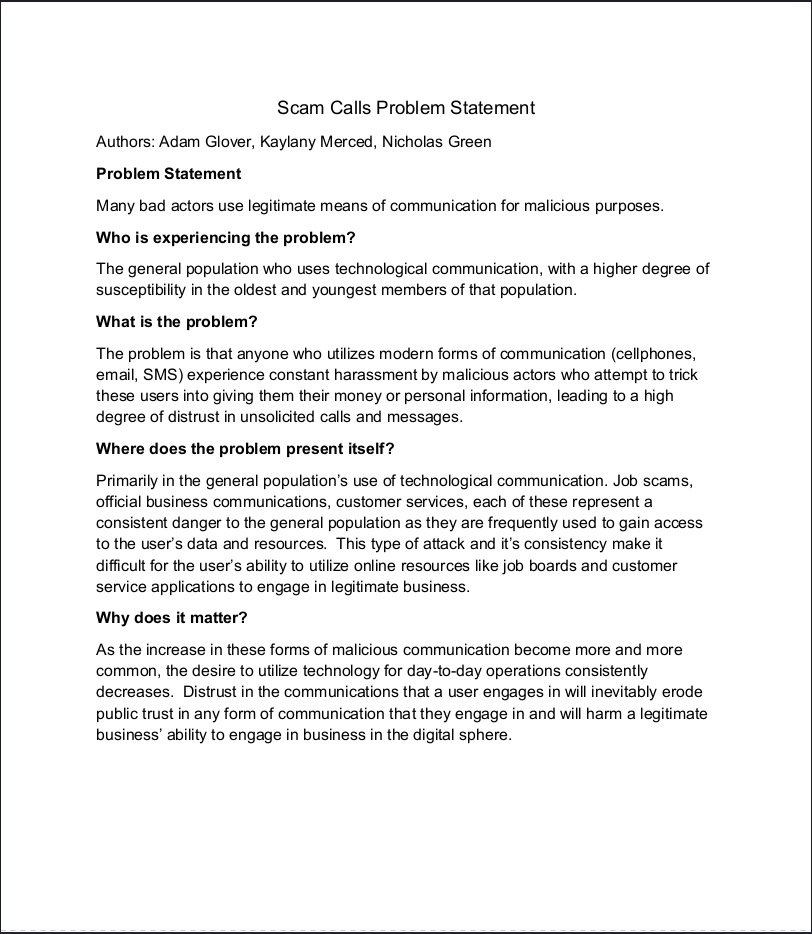
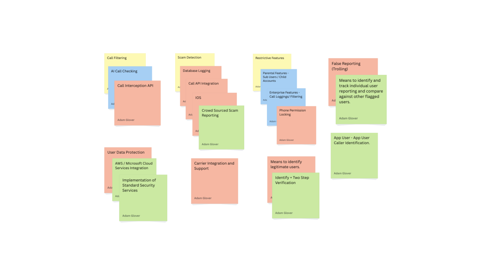

Kaylany Merced
About me
(I'm putting a picture of a puppy because puppies are cute)
Hello world and welcome to my portfolio! My name is Kaylany Merced, and I'm currently
a student at the University of South Carolina studying Computer Information Systems (CIS).
My jam is learning about malware and by extension, how they work on a target computer and building computers themselves!
The goal is to dabble into building PCs professionally or get into server admin. Maybe even both.
Skills
Entry-level coding language(s): Java
Entry-level hardware: Building desktops with modern hardware
Foreign language(s): Spanish
Highlighted projects
Problem Statement

There are many bad actors who use legitimate forms of communication for malicious purposes.
Contact me
Email: kaylanyrmerced@proton.me
Github: https://github.com/KMerced
Sketches

Work in progress...
Affinity Diagram

The diagram is a mass of potential features, potential problems, and solutions to said problems separated into their own clusters.
Yellow sticky notes are the clusters themselves. Blue sticky notes are potential features, red sticky notes are potential problems, and green sticky notes are solutions.